Girl with a Pearl Earring, by Vermeer
About Vermeer and his Girl with a Pearl Earring (1665)
The year 2023 was unmistakably one of Johannes Vermeer. For example, 650,000 people visited the Vermeer exhibition in the Rijksmuseum in Amsterdam in the spring. This was the largest retrospective exhibition ever, with 28 of Vermeer's 37 works.
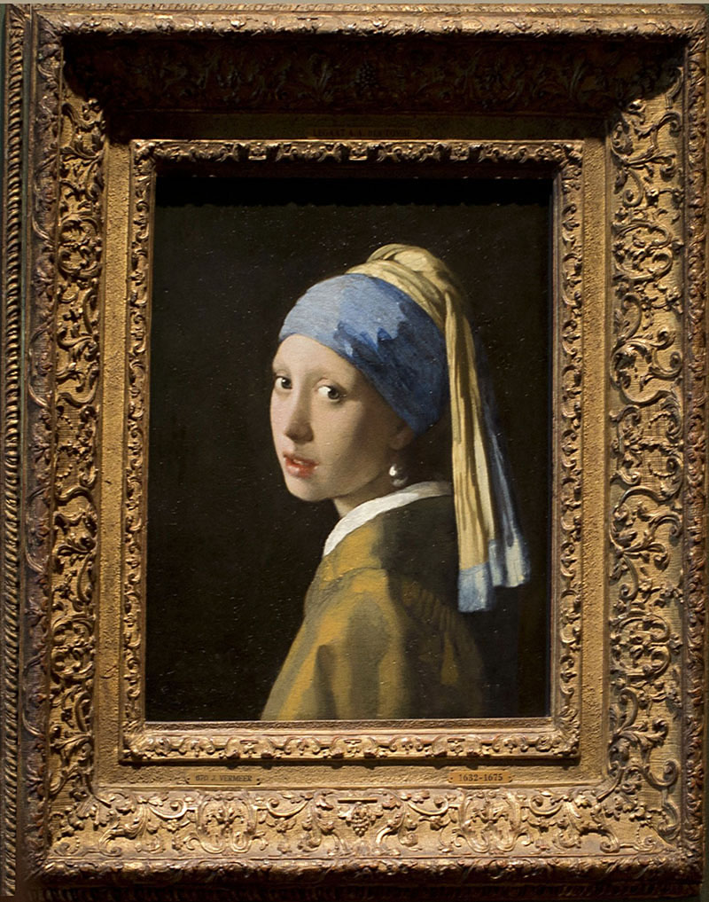
The series De Nieuwe Vermeer was simultaneously broadcast on Dutch television, in which the painter's disappeared paintings were brought to life. Other museums also participated, including the Prinsenhof in Delft with an exhibition about Delft artists during the time of Vermeer and the Mauritshuis with an exhibition about his contemporary Jacobus Vrel.
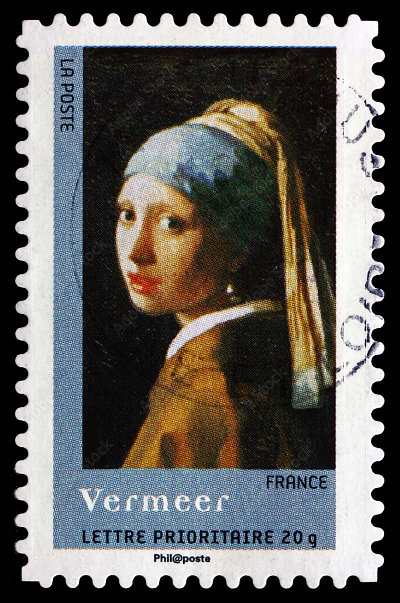
The Girl with a Pearl Earring is the most famous painting by the Dutch master Johannes Vermeer. Johannes Vermeer was the master of light. This is shown in the softness of the girl’s face and the glimmers of light on her moist lips. And of course, the shining pearl. It is not a portrait, but a ‘tronie’ – a painting of an imaginary figure.
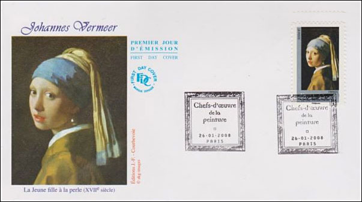
Tronies depict a certain type or character; in this case a girl in exotic dress, wearing an oriental turban and an improbably large pearl in her ear. Vermeer always spent a long time on every painting, so he did not complete many pictures. We know of only 36 paintings by him. Vermeer was also an art dealer and valuer.
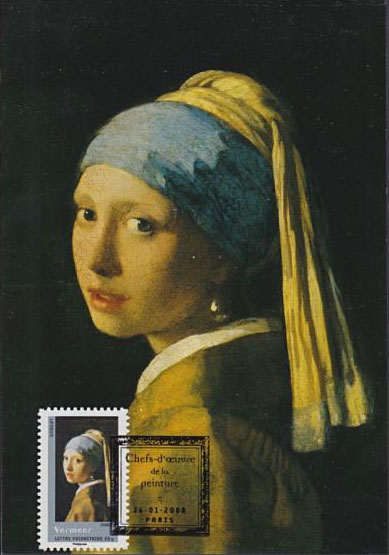
The canvas dates from 1665-1667 and has been in the possession of the Mauritshuis in The Hague since 1902. The Girl with a Pearl Earring is a so-called tronie, the representation of a certain type or character. In this case it is the face of a girl in exotic clothing, with an oriental turban and a large pearl in her left ear.
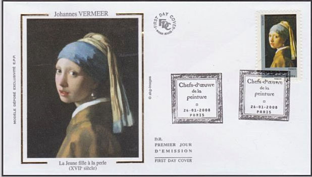
As with Vermeer's other models, the girl's name is unknown. Vermeer was the master of light and this can be seen in this painting by the soft character of the girl's face, the glowing lights on the moist lips and the shiny pearl near her left ear. The clothing is depicted schematically and enlivened with small dots of paint that suggest the reflection of light. The white collar was painted with thick strokes of paint and Vermeer used the precious pigment ultramarine for the paint for the turban. The pearl itself consists of little more than 2 paint strokes: a bright light accent at the top left and the soft reflection of the white collar at the bottom.
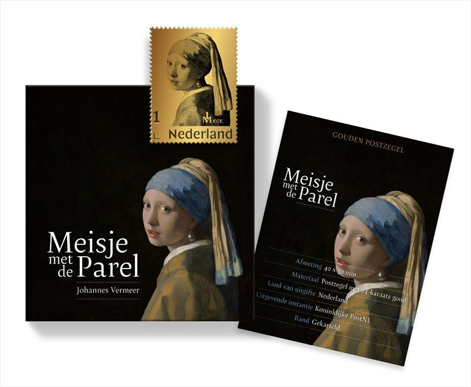
The Dutch stamp issue
As part of the Vermeer Year 2023, PostNL issued 2 stamps with 24-karat gold on October 31. The subject of the 2 stamps is Vermeer's painting Girl with a Pearl Earring. The design of both stamps was made by graphic designer Frank Janse from Gouda. The price for Girl with a Pearl Earring (regular version) with 24-carat gold is €50.00 each, including a luxury storage box and certificate of authenticity.
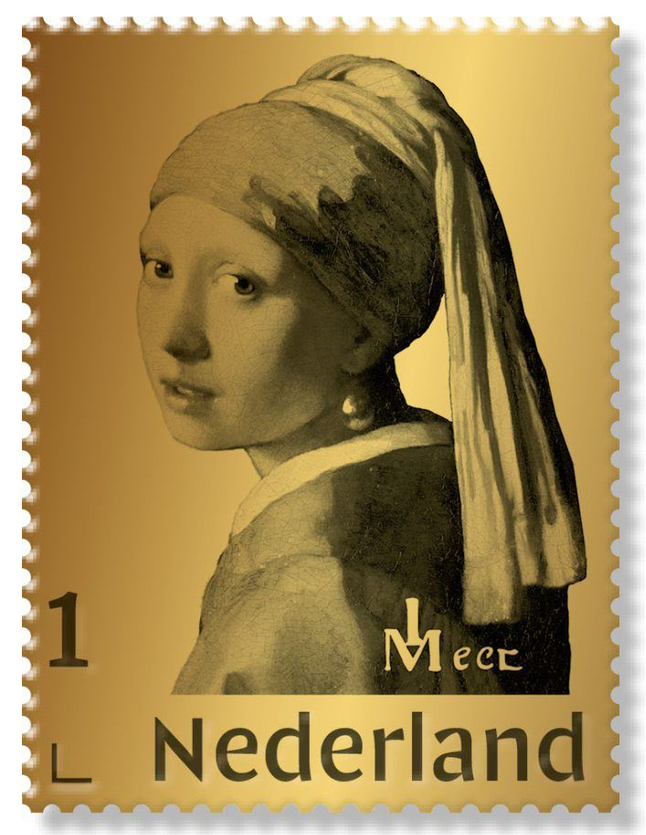
The price for Girl with a Pearl Earring (limited edition) with 24 carat gold, in color and with a real pearl is € 150.00 each, including a large luxury packaging with painting frame and certificate of authenticity. The picture frame is suitable for hanging or placing.
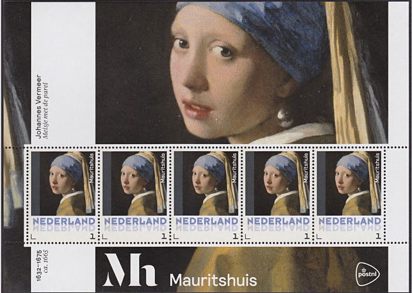
Each copy of the limited edition of Girl with a Pearl Earring (limited edition) is also numbered (from 1 to 500). This number appears on the certificate of authenticity and, as an extra security measure, also on the blister card on which the stamp is attached.
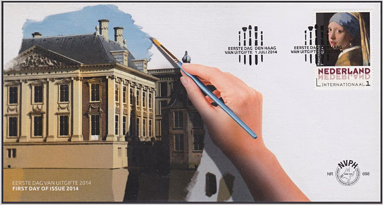
It is just another exemple of a Post taking advantage of its customers by creating artificial "rarities". Source: The Netherland Post Office.
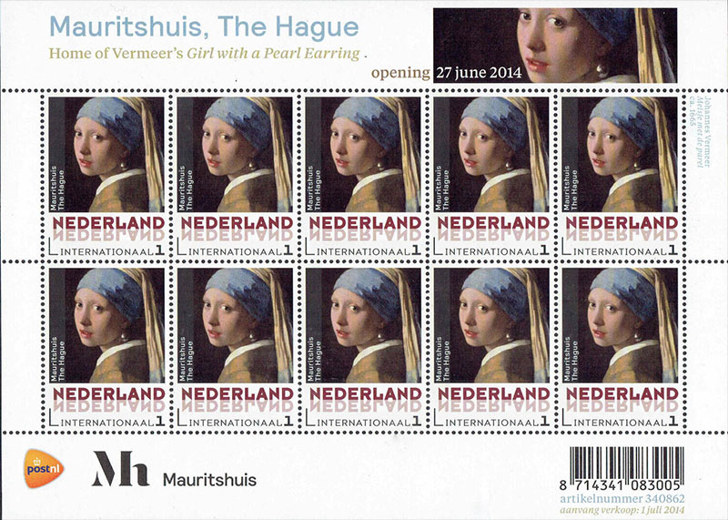
Technical details
Stamp size 30 x 40 mm (wxh)
Edition: 1000 Girl with a pearl earring (regular version), 500 Girl with a pearl earring (limited edition)
Appearance 1 stamp with 24-carat gold (regular version)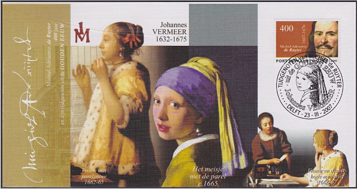
1 stamp with 24-carat gold, with additional colors of ultramarine and ocher and with real pearl (limited edition)
Value indication value indication 1 for mail up to and including 20 grams with a destination within the Netherlands
Design Frank Janse, Gouda.Other stamp issues worldwide
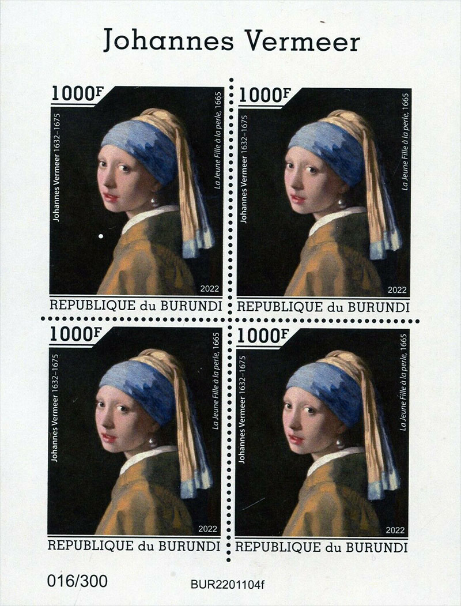
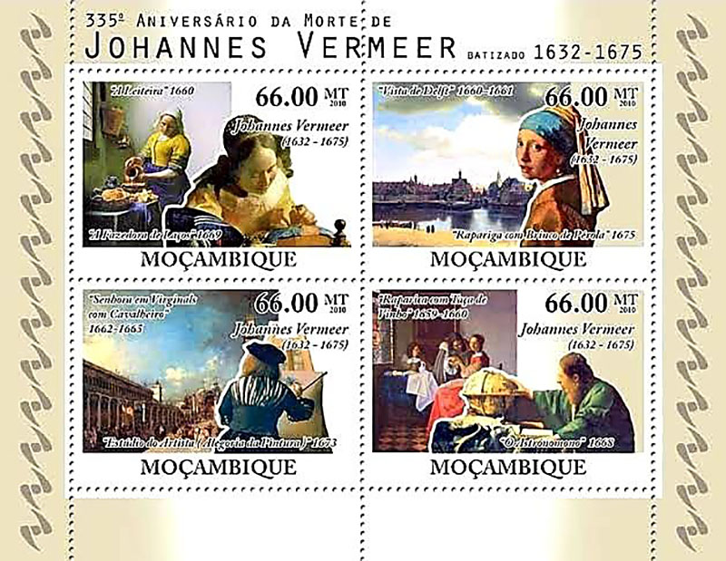